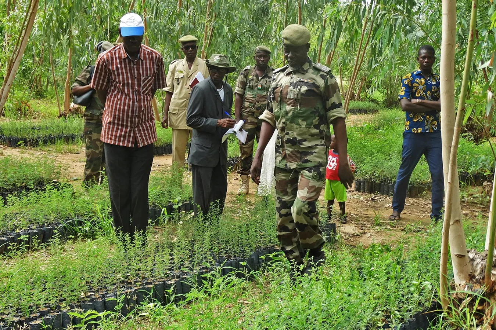

5 Week 4 - Policy
5.1 SUMMARY
Climate-induced desertification is having adverse effects on the African continent each year the Earth continues to warm. It impacts the everyday lives of Africans – from their crops, livestock, and housing – to African wildlife and biodiversity. (Stallwood 2022)
Desertification is "the process by which fertile land becomes desert, typically as a result of drought, deforestation or inappropriate agriculture." It is where semi-arid lands, such as grasslands or shrublands, decrease and eventually disappear. (“Koch Quoted in BBC Article on Dubai, Desertification,” n.d.)
According to European Commision world atlas of Desertification
Over 75% of the Earth’s land area is already degraded, and over 90% could become degraded by 2050.
Globally, a total area half of the size of the European Union (4.18 million km²) is degraded annually, with Africa and Asia being the most affected.
Land degradation and climate change are estimated to lead to a reduction of global crop yields by about 10% by 2050. Most of this will occur in India, China and sub-Saharan Africa, where land degradation could halve crop production.
As a consequence of accelerated deforestation it will become more difficult to mitigate the effects of climate change
By 2050, up to 700 million people are estimated to have been displaced due to issues linked to scarce land resources. The figure could reach up to 10 billion by the end of this century.
While land degradation is a global problem, it takes place locally and requires local solutions. Greater commitment and more effective cooperation at the local level are necessary to stop land degradation and loss of biodiversity.
Further agricultural expansion, one of the main causes of land degradation, could be limited by increasing yields on existing farmland, shifting to plant-based diets, consuming animal proteins from sustainable sources and reducing food loss and waste.

Figure 1: Desertification and Climate Change in Africa
Under the United Nations’ Sustainable Development Agenda, world leaders have committed to “combat desertification, restore degraded land and soil, including land affected by desertification, drought and floods, and strive to achieve a land degradation-neutral world” by 2030.
While at global level desertification is addressed by the United Nations Convention to Combat Desertification (UNCCD), land degradation is a problem that concerns the United Nations Framework Convention on Combating Climate Change and the Convention on Biodiversity.
The importance of land degradation and desertification led to the adoption of Sustainable Development Goal 15.3 aiming at land degradation neutrality.
5.2 APPLICATION
The Sahel region is the most vulnerable region on the continent because of the 1980 drought. The Sahel lies between the Saharan Desert and the Sudanian Savannah. It is a 3,000-mile stretch of land that includes ten counties and is under constant stress due to frequent droughts, soil erosion, and population growth which has increased logging, illegal farming and land clearing for housing.
According to united nation global outlook2 report found that intensive agriculture methods are responsible for upto 80% of deforestation.
With the Sahel region being the most vulnerable and heavily affected by desertification, an initiative known as 'The Green Wall' was put in place for the Sahara and Sahel in 2007. Its ambitious aim is to grow an 8,000-kilometre natural wonder across the entire width of Africa in order to increase the amount of arable land bordering the Sahara desert. The idea is that planting more trees will combat desertification, create jobs, increase food security and bring migrated populations back home to Africa.
The Great Green Wall's goal for 2030 is to restore 247 million acres of destroyed land and create 10 million jobs in affected rural areas.AFR100's goal of restoring 100 million hectares by 2030 is not as far-fetched as we may think despite the ambitious goal, especially since the Great Green wall received $14 billion in funding for the next ten years at the recent One Planet Summit for Biodiversity. (Stallwood 2022)

The Great Green Wall concept was first put forth in the early 2000s in response to the Sahel region's increasing desertification and degradation of the land.
Some examples of case studies-
Monitoring methods based on desertificatio indicators mainly include the single indicator method and multiple in dicatormethod. When using a single indicator to evaluate desertifica tion,most studies used vegetation index thresholds to classify the degree of desertification (Bezerra et al., 2020; Filei et al., 2018). Evidently, this method only considers vegetation cover and ignores soil information, leading to the lower accuracy of the classification results (Wei et al., 2018). The multiple indicator method includes two categories: use of the feature space models for classification, and use of machine learning methods to construct evaluation models and classification criteria. Common feature space models include the albedo-normalized differen tialvegetation index (NDVI) model (Wei et al., 2020) and point-point model (Guo et al., 2020). Because such models only consider two in dicators,it is difficult to accurately monitor complex desertificatio information (Duan et al., 2019). In the common multiple indicator classification methods based on machine learning methods, the in dicatorsmainly include the NDVI, albedo, topsoil grain size index (TGSI), and land surface temperature.
The spatio temporalcharacteristics of desertification in Mongolia in 1990–2020 and revealed its driving forces. Based on all Landsat images in 1990–2020 in Mongolia, extensive ground surveys, and the existing desertification classification system, we used decision tree, support vector machine (SVM), RF, naive Bayes (NB), minimum distance (MD), and maximum entropy (ME) classifiers, to extract desertification information for seven periods (1990, 1995, 2000, 2005, 2010, 2015, and 2020).
5.3 REFLECTION
If i am a city planner how can we start to address this What areas should i start with (funding often limited) What stage in the planning process might this come Who would be responsible (e.g. what department) What skills do they need What benefits can this bring to the city (often finances!) How does this help the city align with global agendas What stakeholders do i need to consider